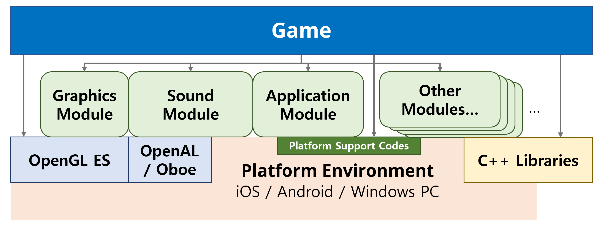

Concept and Architecture
A Bird’s-eye View
Overall Architecture
{kind=link}
Leggiero engine abstracts each concrete platforms. Engine modules of Leggiero provides functions of platform functions, graphics and sound API, and other C++ library functions as easy-to-use abstract form.
Leggiero engine itself and projects using Leggiero are mainly developed in C++ language, hence plenty open source libraries are available to use. Leggiero engine embeds several open source libraries and some of modules are wrapping those libraries.
OpenGL ES API is directly accessible from game codes. Graphics module of the engine manages initialization and event handling for OpenGL ES system. It also provides some useful graphics utility functions. You can process rendering of the game yourself using those functions in game code.
There can be some argument for the Leggiero is really a game 'engine' or not. It doesn’t provides game logic or renderer structure, so someone want to call it 'framework'. Leggiero was orignally developed for a game <Protocol:hyperspace Diver>, and we call it 'engine' to contrast with real 'game codes'. But you can call it whatever you want.
Common Parts
Basic , Engine , Utility projects provides engine's the most basic, independent stuffs. Basic library provides global types and compiler setting, and Utility library contains tools just above from language level.
Engine library defines common base structures for the game. It also provides a Toolbox for moduled game structure and commonly using Scene structure.
Moduled Engine
Leggiero is designed for moduled structure. Like following code in CreateGame.cpp file, the engine is 'assembled' from engine modules at the starting:
//------------------------------------------------------------------------------
void Game::_InitializeUsingModules(Leggiero::IPlatformApplication *application)
{
_InitializeModule(Leggiero::EngineModuleIdType::kLog, application);
_InitializeModule(Leggiero::EngineModuleIdType::kCrypto, application);
_InitializeModule(Leggiero::EngineModuleIdType::kHTTP, application);
_InitializeModule(Leggiero::EngineModuleIdType::kGraphics, application);
_InitializeModule(Leggiero::EngineModuleIdType::kFont, application);
}
//------------------------------------------------------------------------------
void Game::_RegisterUsingComponents()
{
_RegisterEngineComponent(new Leggiero::Graphics::GraphicResourceManagerComponent());
_RegisterEngineComponent(new Leggiero::Input::TouchInputComponent());
_RegisterEngineComponent(Leggiero::FileSystem::FileSystemPathComponent::CreateComponentObject());
_RegisterEngineComponent(Leggiero::FileSystem::BundleFileResourceComponent::CreateComponentObject());
_RegisterEngineComponent(new Leggiero::Font::GlyphManagerComponent());
_RegisterEngineComponent(Leggiero::Sound::SoundMixerComponent::CreateComponentObject());
_RegisterEngineComponent(Leggiero::Sound::BGMPlayerComponent::CreateComponentObject());
Leggiero::Task::TaskManagerComponent *taskManager = Leggiero::Task::TaskManagerComponent::CreateComponentObject();
Leggiero::Task::GraphicTask::EnableGraphicTaskSystem(taskManager);
_RegisterEngineComponent(taskManager);
_RegisterEngineComponent(new Leggiero::HTTP::Async::AsyncTaskHttpComponent());
}
Engine modules can provide Engine Components with their own state, and Module Interfaces which is a formalized interface for module API's internal processing.
Roadmap
Leggiero is developed for a finished game development project, and currently not actively developing. We have no plan for major updates, although we will accept PRs and deal with some bug issues.
If some development roadmap established, we will announce it in this document or in the GitHub repository.